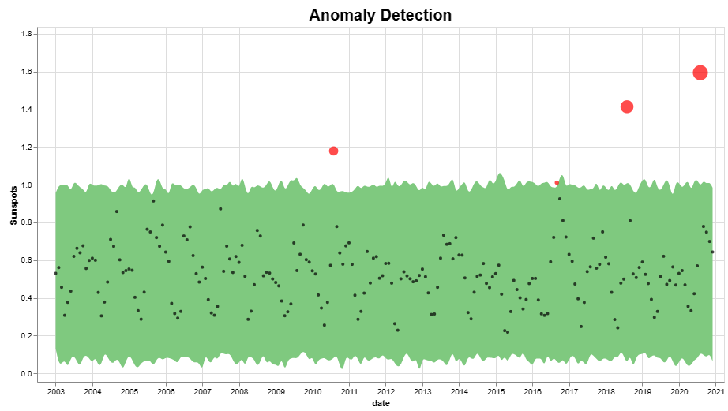

GeoOcean Documentation
Toolkit for Oceanographic Parameters
Please look through the documentation and installation steps
- Version: 1.0
- Organization: Space Application Center, Ahemdabad
- Created: 10 May, 2023
- Update: 10 May, 2023
Installation
Windows / MAC / Linux
Follow the steps below to install and setup the application in Windows PC
- Download and unzip the downloaded package and open the /geo-ocean folder to find all the asset and function files. You can also close the github repository
-
- geo-ocean/GUI.py - The main python application
- geo-ocean/plot_functions - Plot functionalities
- geo-ocean/file_functions - Netcdf file handling
- geo-ocean/colormaps - Different available colormap
- geo-ocean/GUI.py - The main python application
- Install the dependencies
pip install -r requirements.txt - Click and run the GUI.exe file
- You can run the application using command line
python GUI.py
git clone https://github.com/KrutikaBhatt/geo-oceanInitial Setup
Configure the application for your custom needs
- Enter the Auther Name, folder destinaltion to store logs and downloaded files
- Follow the steps to configure your application
Functionalities
The software is a Installable Cross-platform software that helps processing NETCDF files, visulaize the dataset and provide functionalities for easy statistics and plots
Process NetCDF files
- Upload the Netcdf files
- View the variable parameters of the satellite file
- Get statistical information for the file and parameters
- Select colormaps and scales to display the visuallizations
- Select the Region of Interest for visulaization
For plotting, we use the matplotlib and cmocean. You can add additional colormaps in plot.py
cmapnames ={
"thermal":cmocean.cm.thermal,
"haline":cmocean.cm.haline,
"solar":cmocean.cm.solar,
"ice":cmocean.cm.ice,
"gray":cmocean.cm.gray,
"oxy":cmocean.cm.oxy,
"deep":cmocean.cm.deep,
"dense":cmocean.cm.dense,
"algae":cmocean.cm.algae,
"matter":cmocean.cm.matter,
"turbid":cmocean.cm.turbid,
"speed":cmocean.cm.speed,
"amp":cmocean.cm.amp,
"tempo":cmocean.cm.tempo,
"rain":cmocean.cm.rain,
"phase":cmocean.cm.phase,
"topo": cmocean.cm.topo,
"balance": cmocean.cm.balance,
"delta":cmocean.cm.delta,
"curl":cmocean.cm.curl,
"diff":cmocean.cm.diff,
"tarn":cmocean.cm.tarn,
}
If you need more information, please visit cmocean site: https://matplotlib.org/cmocean/
Statistical Plots
User can generate a number of plots for the timeseries data. The plots available are :
- Generate PACF and ACF plots
- Generate rolling mean time series plots
- View Decomposition of timeseries
- Time Distributed series plot
Advanced Functions
Some advanced functions include concatination, anamoly detections, view data as grid view
- View dataset in grid view
- Anamoly Detection using Prohet Algorithm
- Concatination of netcdf files

More advanced functions will be added eventally with as the development of the software project
Video Explaination
Please look at the video descibing all the functionalities and usage
Version 1.0 (10 May, 2023)
Initial Release